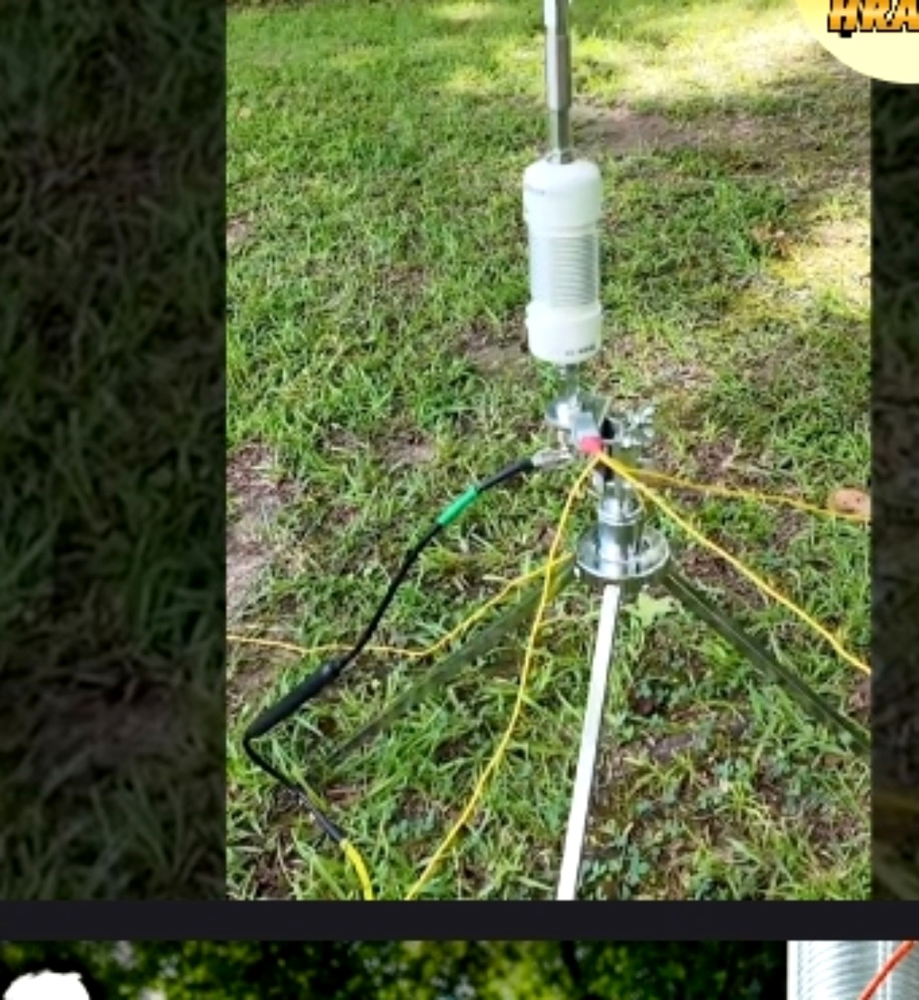

BDW COILS
Portable antenna coverage without carrying the whole shack.
Hand-wound portable antenna coils built by Brent Wells, N4BDW, in Flemingsburg, Kentucky, for operators who want a practical way to add bands to a field setup. Thoughtful materials, serviceable construction, and continuity testing before shipment put the focus where it belongs: getting on the air.
As seen at Dayton Hamvention 2026 • Built by a Parks on the Air activator

BDW Coils are built around practical portable operation: add useful band capability while keeping the setup serviceable, understandable, and ready for the next activation.
More bands from one portable system.
Inspired by the W0BNC design and modified by N4BDW, this 12-inch coil is designed for SSB and works with 17-foot and 25-foot whips.
Backpack-friendly 30m / 40m coverage.
A compact option for operators who want a simpler portable package. It fits an Apache-style case and works with 17-foot and 25-foot whips.
These are not presented as disposable mystery parts. The design emphasizes practical materials, serviceability, and a construction approach intended for real field use.
- 316 stainless hardware
- 17 ga electric-fence wire
- Nylon wire guides
- Silicone replaceable jumper
- 100W SSB tested
- Continuity checked before shipment
The BDW approach centers on straightforward field hardware and a separate silicone shorting wire. That makes the system easier to work with when you are packing, deploying, changing bands, and tearing down.
For operators who want additional band capability without turning a portable station into a complicated project, that practical mindset is the point.
of 26-gauge silicone wire
For 160 meters, the whip comes off and 75 feet of 26-gauge silicone wire connects to the top of the coil, raised on a mast. Brent’s own field setup uses a 40-foot Spiderbeam mast — no tuner, and close to 1:1 SWR from 1.85 to 1.89 MHz. A 20-foot mast version is being tested now.
Your results will depend on your mast height, ground and surroundings.
BDW Coils on the air — from Brent’s activations to other operators putting them to work in the field.


Brent is an Amateur Extra class operator from Flemingsburg, Kentucky, and an active Parks on the Air activator. Every BDW Coil comes out of his own portable operating — built, tested and used in the field before anyone else gets one.
He’s a founding member of the Kentucky Portable Club and serves as Kentucky’s POTA mapping representative. When he isn’t winding coils, you’ll probably find him on the air from the Daniel Boone National Forest.
“Cave Run is where I’m most at peace.”— Brent Wells, N4BDW
Ask about the available coil options, band coverage, whip configuration, or how a BDW Coil fits your portable operating plan.
CONTACT N4BDW →